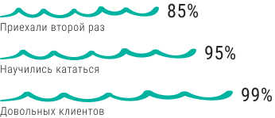

<section class="buns_section">
<div class="container">
  <h2 class="buns_title">В  ШКОЛЕ ВЫ ПОЛУЧИТЕ</h2>
  <span class="buns_accent"></span>
  <div class="buns__features">

        <div class="buns__feat">
          <div class="buns__subtitle">
            
            <div class="buns__title2">ПРОЖИВАНИЕ</div>
          </div>
          <p class="buns__text">Наша школа серфинга находится в 100 м от океанского побережья. К услугам гостей открытый бассейн и бесплатный Wi-Fi. Из верхней террасы открывается вид на океан. Расстояние до центра города 15 мин. </p>
        </div>

        <div class="buns__feat">
          <div class="buns__subtitle">
              
              <div class="buns__title2">ПЕРЕЛЕТ И <br> СТРАХОВКУ</div>
          </div>
          <p class="buns__text">Все участники программы застрахованы страховой компанией Allianz.<br>Перелет из Тенерифе до острова Лансароте  и обратно входит в стоимость программы</p>
        </div>

        <div class="buns__feat">
          <div class="buns__subtitle">
              
              <div class="buns__title2">ОБУЧЕНИЕ И <br> ЭКИПИРОВКУ</div>
          </div>
          <p class="buns__text">Все оборудование и экипировка известных производителей и предоставляется на весь курс программы. Тренировочный процесс начинается с определения вашего уровня катания </p>
        </div>
  </div>

    <div class="buns__static">
      
      <p>Огромным преимуществом нашей школы является собственная методика обучения. Мы разработали собственный стиль обучения серфингу, который позволяет новичкам максимально быстро встать на доску.<br><br>Именно наша методика и наши преподаватели позволили нам пройти аттестацию Федерации серфинга Канарских островов - FEDERACIÓN CANARIA DE SURF. Это означает, что наша школа соответствует всем мировым стандартам. Переаттестация производится ежегодно и это позволяет нам всегда стремиться к улучшению обучения.</p>
    </div>
    </div>
  </div>
</section>
